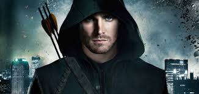

Green Arrow is a fictional superhero who appears in comic books published by DC Comics.Created by Morton Weisinger and designed by George Papp, he first appeared in More Fun Comics #73 in November 1941.His real name is Oliver Queen, a billionaire businessman and owner of Queen Industries, also a well-known celebrity in his locale of Star City.Sometimes shown dressed like Robin Hood, Green Arrow is an archer who uses his skills to fight crime in his home cities of Star City and Seattle, as well as alongside his fellow superheroes as a member of the Justice League.Though much less frequently used in modern stories, he also deploys a range of trick arrows with various special functions, such as glue, explosive-tipped, grappling hook, flash grenade, tear gas and even kryptonite arrows for use in a range of special situations. At the time of his debut, Green Arrow functioned in many ways as an archery-themed analogue of the very popular Batman character, but writers at DC subsequently developed him into a voice of progressivism very much distinct in character from Batman.